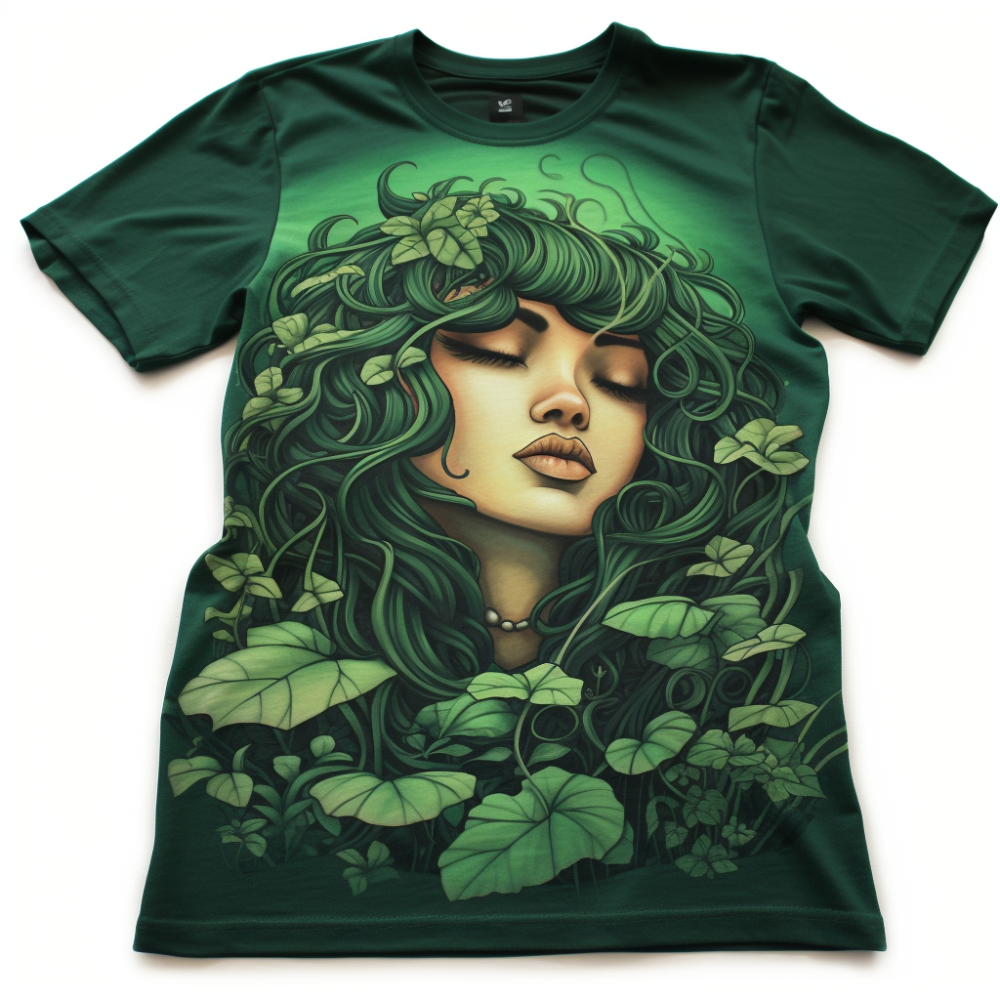

This shirt could be a vibrant green color with a design of various types of plants and the words "Green Dreamer" in bold, white letters. It represents the mission of Green Thumb United to help customers cultivate their green dreams.

Plant Whisperer T-shirt
This shirt could be in a calming earth tone with an image of a person whispering to a plant. The words "Plant Whisperer" would be written underneath. This shirt represents the deep understanding and care that the Green Thumb United team has for plants.
Sustainable Gardener T-shirt
This shirt could be in a natural, unbleached cotton color with a design of a plant inside a recycle symbol. The words "Sustainable Gardener" would be written underneath. This shirt represents Green Thumb United's commitment to providing sustainable solutions for plant care.
Not Just Another Plant T-shirt
This shirt could be in a bold color with a design of a unique, exotic plant and the words "Not Just Another Plant" written in a stylish font. This shirt represents Green Thumb United's approach to considering the suitability of each plant for the customer's environment.